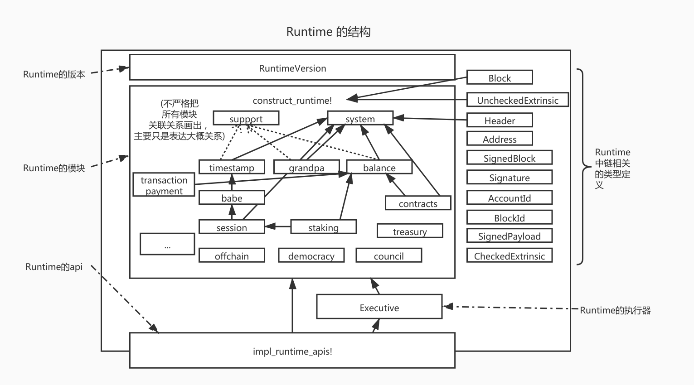

Substrate 入门 - Runtime的构成 -（十）
由于疫情原因，以及近期在忙于其他开发，因此文章停滞了一段时间。之前的文章已经介绍了Runtime的概要以及Runtime的wasm，因此读者应该具备了对Runtime的全局观念以及如何通过编译过程的基本知识。因此从本文开始，将会进入对Runtime的正式介绍。
本文首先介绍Substrate的Runtime的构成。
一个完整的Substrate Runtime
对于一个完成的Runtime，其主要实现位于：bin/node/runtime/src/lib.rs中。
一个Runtime一定需要含有如下组件：

- RuntimeVersion：用于标示当前Runtime的版本，是用于区分执行wasm和native的重要属性。每次若出现逻辑变更都应该手动修改这个版本号（其中分影响共识结果和不影响共识结果的版本）。若出现了影响共识结果的改动但不修改这个版本号，并仍然部署了修改后的wasm，可能会造成无法出块或者无法同步等严重后果。
- Runtime的模块实现
construct_runtime!：构建Runtime所有模块的宏。在编写了一个Runtime的模块后，必须通过这个宏引入构建。在这个宏里会生成很多其他的附属信息如该模块的结构体，对应的一些trait的实现，metadata，等等。- 在
lib.rs中的trait的关联属性以及api的调用中可以看到类似type Currency = Balances;，type Time = Timestamp;等的定义，这个关联属性右边的类型就是通过这个宏展开得到。 - 这个宏的构建中，控制了每个模块会导出一些属性如
Storage，Call，Event，Config等等 - 在这个宏中
System是特殊的，一定要引入。 - 除了对应每个模块生成对应的类型以外，这个宏还会生成一些统一的类型和信息如
Runtime这个结构体，AllModules，Call等等。
- 在
- Runtime中与链相关的一些类型定义：如区块，交易体，区块头等等。有一些定义要参与到
construct_runtime!宏中的构建，有一些定义需要对外暴露提供调用。Substrate的抽象很好，基本上所有链的基本元素定义都是可以自由定制的。例如签名可以替换成单个签名或允许多种类型秘钥的签名，地址可以替换成使用accountid或兼容几种查询等等。 - Runtime的执行器：执行器虽然也是一个Runtime模块，但其是特殊的，甚至比System模块还特殊。执行器不参与
construct_runtime!宏的构建，而是直接定义。其提供了Runtime正常运行的所有接口，如初始化，执行区块，执行交易，验证交易等等。执行器需要依托construct_runtime!宏导出的AllModules，也就是说执行器持有所有模块的类型，将会控制这些模块的OnInitialize，OnFinalize等等。 - Runtime的Api实现
impl_runtime_apis!：前面的文章介绍过Runtime与外界交互的接口，这个宏即是所有api的实现部分。对于api首先先有定义api的宏decl_runtime_apis!，然后对应于这个定义的api，可以在impl_runtime_apis!中有对应的实现。Substrate默认提供了一些api的定义，其中Core的api定义是一定要实现的。其他的一些api如BlockBuilder，共识相关的api，虽然不是在Core里，但是为了让一个Runtime能以“链”的形式存在，也是一定要实现的，但是若作为平行链，那么例如和共识相关的这些api就不用存在了。
总体来说，拥有以上5部分可构成一个完整的Substrate Runtime。
Runtime的模块构建
通过以上介绍可知，一个Runtime的核心就是construct_runtime!，其起到了集合所有Runtime模块并产生对于类型的作用。是整个Runtime的总控制开关。也就是通过这个宏，可以插拔的控制Runtime模块的引入，也就是控制“链的功能”。
construct_runtime!模块中每一行是一个模块，添加进入即代表构建当前Runtime的时候引入该模块。
一般而言，有一个模块是必不可少的：
- System：该模块用于描述链的一些基本属性，因此无论公链还是联盟链都必不可少。并且这个模块在
construct_runtime!宏内也是被特殊处理的，必须位于第一个且不可缺少。在这个模块中需要参与块的初始化on_initialize，块的结束处理on_finalize，区块的块高，交易数量，父hash，交易根，事件Event等等一系列与链息息相关的数据定义都在这个模块里。可以说是类似“环境变量”这一概念在链中存在的地位。
除此之外的所有模块都是可选的，但是这里的可选的意思并非对于一条链，而只是对于基本构建而言。对于一条链所需要的模块，笔者大概分为以下两类：
- 满足链的业务逻辑
- 对Runtime外层一些功能的数据映射，或是提供数据让底层模块做出相应变更。
例如：
满足链的业务逻辑：
balances模块，记录用户的资金变化，一般公链必须要有，联盟链根据需求裁定staking模块，pos公链必须，pow公链与联盟链反而不需要。contracts模块，合约模块，根据链业务逻辑觉得是否需要。council，treasury，transactionpayment等等，根据命名可以大概猜测其含义- 等等
对Runtime外层起效或交互的模块
Babe。使用babe共识必须，可以设置babe当前的出块人，底层babe共识模块会通过api读取当前的设置，当前的epoch 等等。例如一个epoch变化后，更换出块人列表，那么可以通过staking模块处理好对应的出块人列表然后设置进入babe的Runtime模块，然后在这轮出块中，底层的babe模块就可以读到最新的出块人列表。Aura。使用arua共识必须，和babe同理提供当前的出块人。Grandpa。提供grandpa验证人，同样可以在Runtime内通过其他逻辑变更影响底层grandpa逻辑进行确认ImOnline。底层通过内部交易/offchain等反馈当前节点存活情况，是一个获知外界信息（oracle）的很好例子FinalityTracker。提供grandpa的finality已经到哪一个块的模块，是反馈底层模块信息的例子- 等等
而对于在construct_runtime!定义的每一行而言，类似：
#![allow(unused)] fn main() { System: frame_system::{Module, Call, Config, Storage, Event<T>} }
在宏的注释中有简略介绍：
#![allow(unused)] fn main() { /// We provide support for the following module parts in a pallet: /// /// - `Module` /// - `Call` /// - `Storage` /// - `Event` or `Event<T>` (if the event is generic) /// - `Origin` or `Origin<T>` (if the origin is generic) /// - `Config` or `Config<T>` (if the config is generic) /// - `Inherent ( $(CALL),* )` - If the module provides/can check inherents. The optional parameter /// is for modules that use a `Call` from a different module as /// inherent. /// - `ValidateUnsigned` - If the module validates unsigned extrinsics. }
这里稍微多做一些介绍：
这样的宏定义有一些类似rust中的use module::{xxx, xxx}，表示在通过construct_runtime!集成这个模块的时候需要导出这个模块的一些统一的功能。
-
Module，表示导出这个模块的结构体，其结构体名字对应于这行定义开头，例如例子中的System，是这个模块产生于Runtime中的模块名，通过这个宏将会生成pub struct System，这个结构体，在lib.rs中引用中出现在type=右边的，在api中出现类似Contracts::这样的，这个结构体的名字是由这里的Module指定。因此若这个名字更改，相应的地方也需要做更改。#![allow(unused)] fn main() { System: frame_system::{Module} // Module 表示导出以这行开头的定义的结构体 System } -
Call，表示导出这个模块可以对于的交易（Extrinsic）中的方法，例如balances中的transfer啊这类的。也就是Call是模块通过交易能够接受的接口调用。 -
Storage，表示导出这个模块的存储。这里注意只要在模块内部定义了storage（后几篇文章会介绍），即使不导出这个存储这个存储也是存在的。这里是否导出更大的是影响metadata的生成。 -
Event，表示导出这个模块的Event。对metadata影响大 -
Origin，表示导出模块的Origin，对应于这个模块中定义了类似一下的origin定义#![allow(unused)] fn main() { pub struct Module<T: Trait<I>, I: Instance=DefaultInstance> for enum Call where origin: <T as frame_system::Trait>::Origin { } -
Config，表示是否导出genesis的配置，这个Config会影响genesis的生成 -
Inherent，导出内部交易。其用法参考Timestamp，这是个很好的例子。 -
ValidateUnsigned，这个更多的和offchain相关。
以上即是对construct_runtime!粗略的介绍。
总结
本文介绍了Runtime的构成元素。通过本文应知道，一个Runtime基本上由5个部分组成，其中construct_runtime!的构成是最核心与重要的。应该理解construct_runtime!是Runtime模块的总开关，控制了该Runtime的组合逻辑。